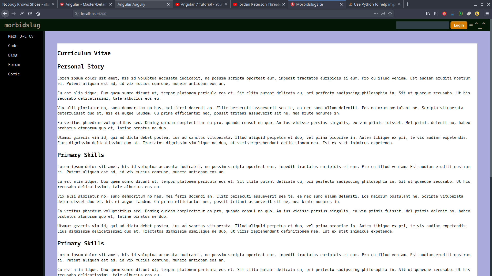

Stage One - What do I want my website to look like?
So, I need a navbar... that's not so bad, right? Everyone can make a navbar, what do they even do? There's a lot of questions that I have not asked myself, UI is not a main concern when your focus is API contracts, parsing strings, editing and using DSLs, optimising SQL queries and ensuring the structures you have built make sense for the next unlucky human to come into contact with the code. Actual users1? Using a thing I have built?
Navbars have site names and logos and search bars and login buttons and options drop menus and avatars. Ok, I can make pretend versions of those things while I build a site. Wanna see the first iteration? Well, I'm going to show you anyway. It's not pretty but it does stick to the top of the page as you scroll, it's also a complete overkill as it could be a simple html element and css but I'm writing this in Angular, damnit! Here's the component:
import { Component, OnInit, Input } from '@angular/core';
@Component({
selector: 'navbar',
template: `
<nav>
<span class="nav-title">{{navTitle}}< /span>
<div class="navigation">
<input/> < !-- this is a search box -->
<button class="login-button">Login< /button>
<span class="option-button">=< /span>
<span class="logo">^_^< /span>
</div>
</nav>
`,
styleUrls: ['./navbar.component.scss']
})
export class NavbarComponent implements OnInit {
@Input() navTitle: string;
constructor() { }
ngOnInit() {
}
}
This chunk of code shows one of the niceties of Angular, the @Input() decorator.
This is used to accept an argument passed to the app element by name. In the wrapping html file we have:
<navbar [navTitle]="title"></navbar>
Introducing another lovely aspect of Angular, to insert an app or component of an app into an HTML document all
you need to do is add an element with the name of the selector you defined in the component (or app). In the
above line "title" is actually a varable injected into the wrapping HTML, so we
are passing down the variable down through the templates... it's components and templates all teh way down! I'm
really excited about what this says about the app's state but we're not there yet.
The side bar. Oh dear. This was an arduous process.
I like fundamentals, I prefer to write everything myself, because of this I avoid css frameworks like material and bootstrap. I like css-flex and that was a problem when trying to make a sidebar that sits still. Sidebars have links, everyone knows this and text is easy to add, but hours of trying css that didn't squish it or render the following div underneath it. As always, the internet provides, and margins are as handy as crowbars.


In Angular each component gets it's own css. This is really nice, unless you are tweaking something that governs
the layout of the overall page. So, although the margins that hold the navbar, sidebar and the real content
that you are actually reading (why? I waffle a lot) I have dumped these style directives in
src/app/app.component.css, so you can see why I have the margins
set as they are (good idea, bad idea? You tell me...). The other sidebar/navbar/content styles live in their
respective .scss files.

I am a backend developer. I know, it may come as a shock to you if you have scrolled to this point without reading the blog or looking at the way this page has been styled, but it's true. Something about 'CV' says 'put it on a desk and have it look like paper'. Is this a badly thoguht out plan? Yes, paper doesn't scroll. Does this look like some 90's website that should have been redesigned or retired? Yes, but look at the code that produced it! I think it's pretty spiffy. Just tell me what images and colours you need and we are set. Thinking about hiring me yet? Don't stop now... there's more, but before I get to writing down how I've done it (or even writing the code for it...), here's a picture of the app so far. You may need a bucket, be brave.
